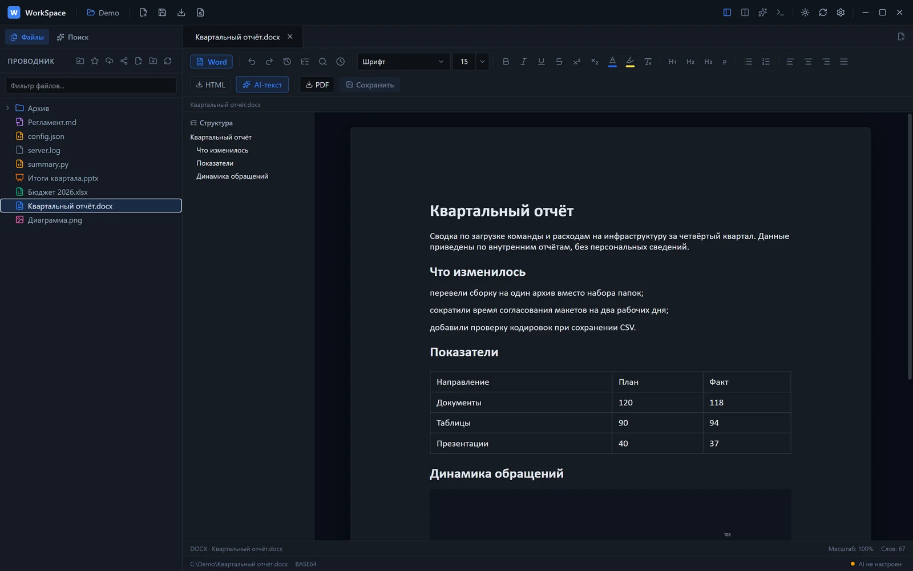
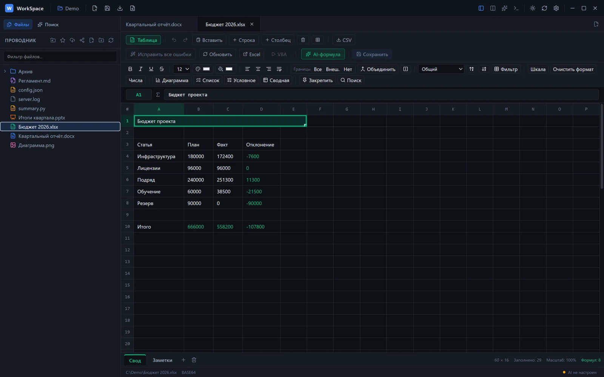
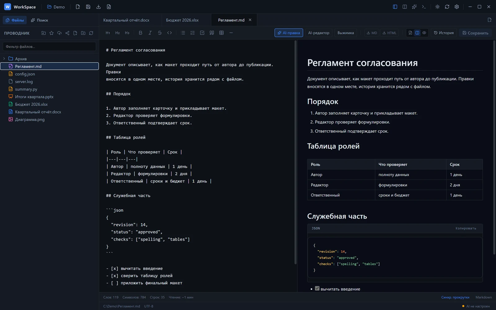
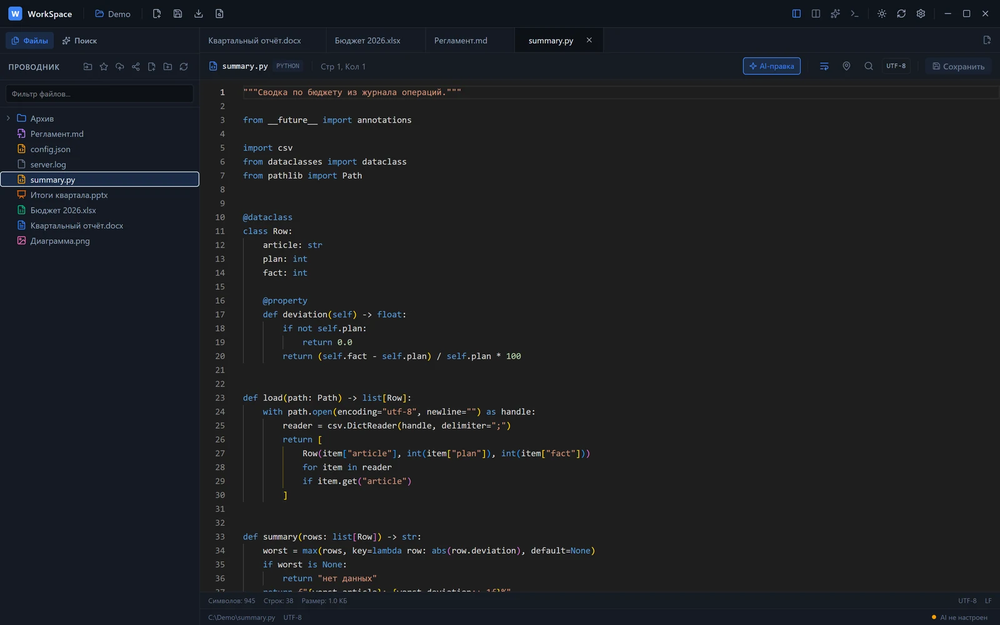
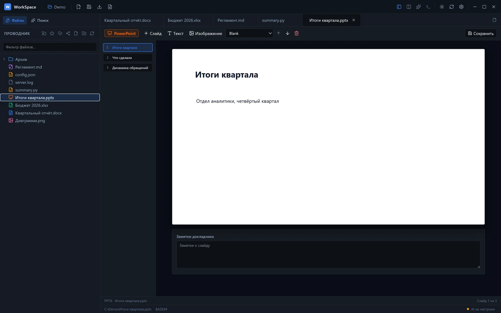
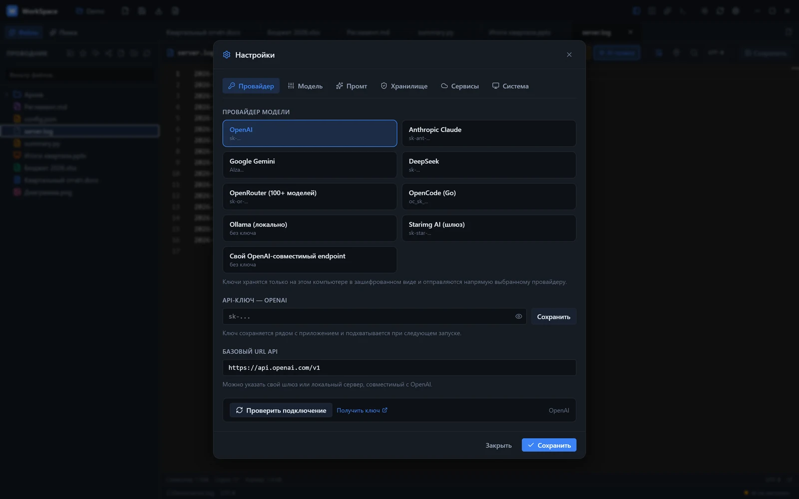
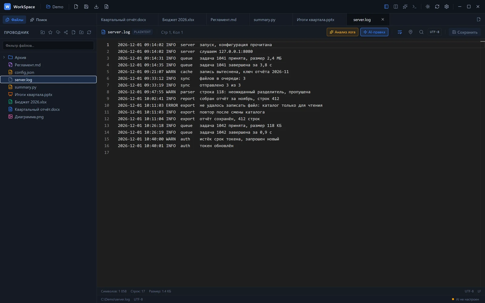

Офис в одном окне
Документы, таблицы, презентации, код и AI-ассистент. Microsoft Office не нужен.

Четыре редактора над одним списком файлов
Вкладки, несохранённые правки и переключение без потери курсора.

Таблицы
Формулы, несколько листов, объединение ячеек и экспорт в CSV. Стили Excel сохраняются как нативные.

Markdown
Код и результат рядом, слэш-команды и история правок.

Код и логи
Monaco со 100+ языками, поиск по RegEx и разбор логов по ERROR.

Презентации
Слайды, заметки докладчика и изображения; новый файл собирается из пустого шаблона.
Свой ключ и свой провайдер
Ассистент работает по вашему API-ключу и только с той моделью, которую вы выбрали.
- Провайдеры
- OpenAI, Anthropic, Gemini, DeepSeek, OpenRouter, OpenCode, Ollama
- Где живёт ключ
- На этом компьютере, в зашифрованном виде
- Что умеет
- Правка текста, формулы для таблиц, разбор логов, правка документов

Что открывается без конвертации
| Файлы | Форматы | Что можно делать |
|---|---|---|
| Документы Word | .docx .doc | Заголовки, таблицы, картинки, сноски, колонтитулы |
| Таблицы | .xlsx .xls .csv .tsv | Формулы, листы, форматирование, CSV |
| Презентации | .pptx .ppt | Слайды, заметки докладчика, изображения; .ppt не редактируется |
| Заметки | .md .note .markdown | Код и предпросмотр, слэш-команды |
| Код и конфиги | .json .yaml .py .ts .sql и ещё 100 | Подсветка, поиск по RegEx, миникарта |
| Текст и логи | .txt .log .ini .bat | Кодировки UTF-8, UTF-16, Windows-1251, KOI8-R |
Обновление ставится само
Что изменилось в версии 1.0.15.
-
Загрузчик дожидается выхода
Обновление применяет сам
WorkSpace.exe: приложение закрывается, файлы копируются, окно поднимается заново. -
Формулы Excel 2019 и массивы
Движок таблиц считает массивы в
SUMPRODUCTи функции поздних версий Excel. -
Настройки остаются на месте
Ключи и параметры лежат в
%APPDATA%\WorkSpaceи перед установкой резервируются.
Что нужно для запуска
Ни установки, ни Office, ни постоянной сети.
-
Windows 10 или 11, x64
Архив распаковывается в папку и запускается одним файлом.
-
Microsoft Office не нужен
Редакторы встроены, файлы
.docx,.xlsxи.pptxправятся напрямую. -
Сеть нужна для обновлений и AI-запросов
Новая версия загружается с GitHub Releases, запросы ассистента уходят выбранному провайдеру.
Частые вопросы
- Куда уходят мои файлы?
- Никуда: документы читаются с диска. В сеть уходит только запрос к выбранному провайдеру, и только если вы его отправили.
- Что с
.docи.ppt? .docчитается как текст,.pptне разбирается: нужен.pptx. Сохранение создаёт.docxрядом с исходным файлом.- Можно перенести на другой компьютер?
- Да, папка portable: на новом месте ключ вводится заново или импортируется из файла.
- Что с приватностью ключа?
- Ключ шифруется средствами Windows и привязан к профилю; в открытом виде он не покидает машину.
Скачайте и откройте первый файл
Ассистент разберёт лог, поправит документ и покажет diff до сохранения.
Скачать для Windows
ERROR и предлагает шаги исправления.